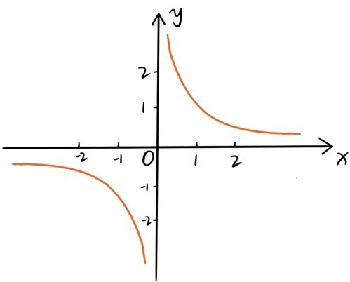
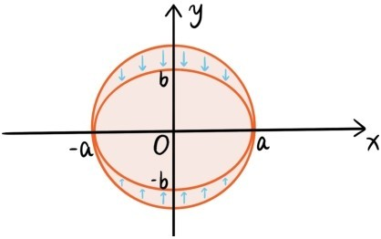

我们先来介绍反比例函数。如果两个量x和y的乘积xy=a是固定的，这两个量x和y是成反比例的。假设小明的家和学校之间的路程是1000米，那么小明走路上学的速度x和他从家到学校所花的时间y就是成反比例的，xy=1000。小明的暑假作业是完成300道数学题，如果他每天做10道，30天才能做完；如果每天做15道，只要20天就能做完，因此他暑假里每天做的数学题数x与完成暑假作业所花的天数y就是成反比例，xy=300。我们称与方程xy=a相对应的函数为反比例函数，下面是当a=1时反比例函数的图象。

函数图象在第一象限与第三象限，因为x和y是同号的。在第一象限中，当x越来越大时，函数值y越来越小，无限逼近0，所以函数图象无限逼近x轴；当x越来越小，无限逼近0时，函数值y越来越大，所以函数图象无限逼近y轴。实际上，容易看出函数图象是关于直线x=y对称的，也是关于原点对称的。
接下来介绍圆的方程。根据坐标平面的两点距离公式，平面上一个点(x,y)到原点的距离等于r>0当且仅当x2+y2=r2。所以方程x2+y2=r2的图形就是以原点为圆心，以r为半径的圆。平移变换之下，圆x2+y2=r2变换成方程(x-a)2+(y-b)2=r2的图象，就是以点(a,b)为圆心，以r为半径的圆。方程(x-a)2+(y-b)2=r2还可以写成
x2+y2-2ax-2by+a2+b2-r2=0
所以平面上所有圆的方程都可以写成这种类型
x2+y2+ux+vy+w=0
在第四章讲过，在平面上，圆与直线最多有两个交点。其实也可以从代数的角度来看这个问题，以圆心为坐标原点，建立直角坐标系，我们可以假设圆的方程是x2+y2=r2，直线的方程是y=ax+b，则圆与直线的交点坐标就是联立方程组的解
在x2+y2-r2=0中用ax+b代替y，得到x2+(ax+b)2-r2=0，这是一元二次方程，最多只有两个解，所以联立方程组也是最多只有两个解。
比圆更一般的是椭圆，椭圆可以通过对圆做伸缩变换得到。椭圆的标准方程是，（a≥b>0），可以由圆x2+y2=a2做伸缩变a2b2换(x,y)→得到。

圆x2+y2=a2的面积是πa2，而伸缩变换(x,y)→似乎会把平面图形的面积变成原来的 （至少对于边与坐标轴平行的长方形是如此），所以我们猜测椭圆的面积公式应该是S=πab，这是圆面积公式的推广。但是第二章圆面积公式的推导方式无法照搬过来推导椭圆面积公式。所以需要问这样一个问题：
问题56：为什么椭圆的面积是πab？
这个问题留给读者思考。
提问时间
5.5.1 请用3个平面（平移，伸缩）变换将函数的图象变换为反比例函数的图象。
5.5.2 求圆x2+y2+4x+6y+12=0的圆心坐标与半径。
5.5.3 请判断圆x2+y2-4x+2y-1=0与直线y=3x+1的位置关系是相割，相切，还是相离。